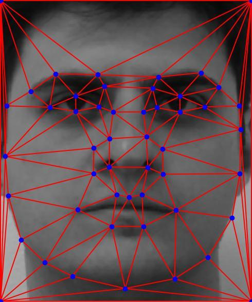
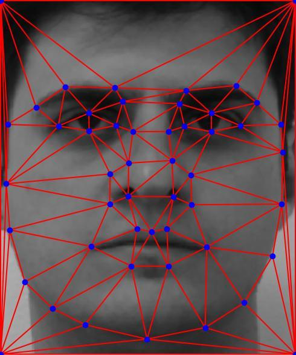
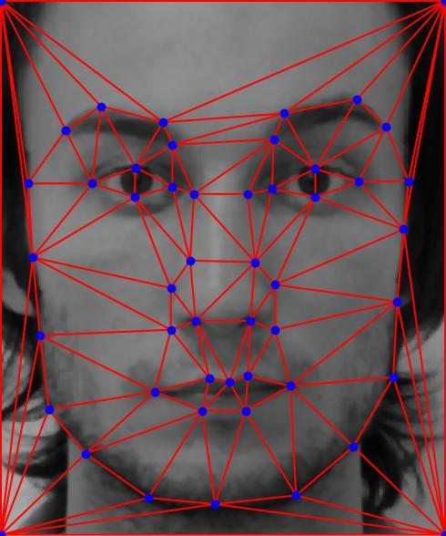
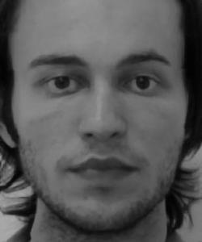
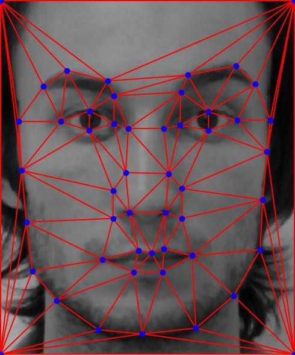
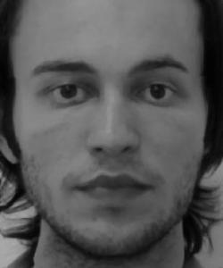
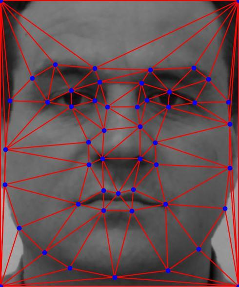
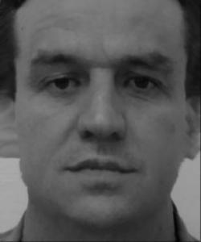
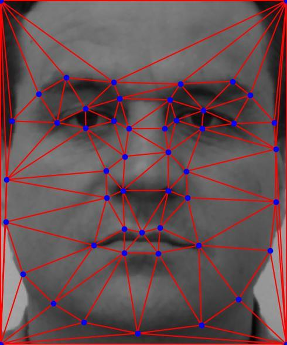
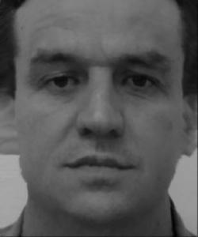

The goal of this project is to produce a "morph" animation of my face into someone else's face. A morph is a simultaneous warp of the image shape and a cross-dissolve of the image colors. The cross-dissolve is the easy part; controlling and doing the warp is the hard part. The warp is controlled by defining a correspondence between the two pictures. The correspondence should map eyes to eyes, mouth to mouth, chin to chin, ears to ears, etc., to get the smoothest transformations possible.
For this part, I used the correspondence tool to generate the (62) points of correspondence for me and my friend King. Using the correspondence, I then plot the triangulation (using delaunay) on the original image:
to create:
This part involves multiple steps. To create the mid-way face image, I first
With the original images and the mid-way face image at hand, we can conduct the morphing process by:
For the output, I created a 60 frames gif as follow:
For this part, I used the FEI neutral expression dataset, which consists of 200 images (100 male and 100 female). The process involves:
1a:
 


2a:
 



3a:
 



The Jason-to-average image looks a bit odd, mainly due to the number of points available for warping (the dataset has 46 points by default, 50 including the corners I added manually for alignment).
Finally, I computed the caricature for my face by adding the difference of my face and the average face onto my face, resulting in an image that emphasises my features.

For the extra credit, I changed the gender of my face by morphing with the average Chinese female face (thanks to Chloe Zhong for providing the source).
Here are the original images:

Here are the results: